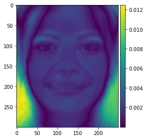

Hello, here are things.
Here is a simple triangulation for correspondances of two images we want to morph. We did this by manually placing corespondances on each face. We also append the corners here as to not cause problems further down the line.


Now for us to compute the midway face, we need to apply some transformations to the two images. To do this, we define a triangulation on the set of points generated by taking the pointwise mean of each point in the correspondances arrays we have. Once We have this, we can run a triangulation. Because of this midpoint trinagulation, we are less likely to have the triangulation overly skewed to one of the images. Altough, the faces are origented in a similar way, so this would likely not be a notable problem in this case. Here we us a simple delaunay triangulation.
Now that we have all the triangles, we can do some inverse-warping. We do this by first defining a linear transformation from the midpoint trianlgle, back to the two triangules in the other images. Once we have this, we can apply these transformations to get the corresponding pixel values in the other two images. Now because there are all sorts of rotations, we may have pixels are are not perfectly aligned, therefore we make use of linear interpolation on the values to get a smooth image. We then add half of the first image's transformed values with the transformed values of the second triangle divied by two. This in total gives us the following midway face:
Original Images:

Midface generated by morph:
Now that we can morph shapes, let us compute a simple morph sequence. To do this we need to get more functionaly for our transforms. First we need more control over the transformation of the triangules. To do this we can use the midpoint triangulation, and apply it to general convex-combinations of the original corespondances in our two images. In this setup, the midway face from before is derived by simply giving a warp_frac value of 0.5.
We can also do a similar thing with the dissolve_frac. Here once we interpolate, we take our output as the convex combination of our two transformed triangles. Here, if we choose a dissolve_frac of 1 or 0, we can save some computing time by not calculating all the interpolations and pixel values from the image we aren't taking pixel values from. Now that we have this function, we can choose a step value and apply the morphing function to the images using different values with stepsize 1/steps. Here we use the same warp and dissolve values for each call, so we don't need to calculate the warps for the edge cases as they should return the original image if transformed. To see this you need to look on the website, not the PDF:
Lets now do some morphing on some datasets. Here we will use the FEI dataset, which for some reason is in black and white. We will use the first 100 faces of this dataset.
Before we do anything, we must first define new correspondances on our original image to match those of the dataset. To do this, we can go through each point individually, note what it corresponds to on the face, and then move it to the right place.
Our original image with corespondances for the FEI dataset.
The dataset has two notable characteristics to partition on: gender and smile. Below we see what we get when we average out the dataset.

We can apready see that there is some bais going on with the dataset here, which will cause some problems down the line.
Looking back at the Obama image, he is smiling, so lets do some work with the set of smiling men. Let's first take a look at some of the faces in the average. We can get these by simply extracting the images before we dissolve them all together.
On the left we have the original image, and on the right we have the face morphed to the shape of the mean.


Above we see the nose being stretched a little bit, as well as the smile having more curvature. The eyebros also have more thickness.
Here we see that the eyebrow and nose shape strethes a bit. The lipse also are moved upwards. The poitioning of the original face is a little tiled compared to the mean, so there is a lot of stretching on the right side of the subject's face.
This one is very subtle, although we notice some changes around the eyes. The neck is morphed a bit, but we don't really care about things that are not the face here.
We see overall that because all of the original images are aligned fairly well, we don't see too much distorting overall.
Now let's see what happens when we morph Obama into this shape, and what happens when we morph the mean face into Obama's geometry:
We see overall that the mean to obama morph actually works decently. It doesn't look perfect, but it somewhat resembles a real face. On the other hand when we morph Obama's geometry we get some strange patterns around the eyes, ears, and mouth. This likely stems from how Obama's geometry and the dataset, as well as the fact that all of faces in the dataset are aligned with eachother.
Now let us extrapolate from the mean. We can do this by morphing with a warp value outside of the stanard range of zero to one. We note that because the mean is characterized by its smile, we can use positive values greater than one to produce a greather smile, and negative values to get something like a frown. Here let's try this for different alpha values:
alpha=-5 on left, alpha=5 on right:
We see here that the results are as expected. negative values give us a frown, and high positive values give us a bigger smile.
We had already computed the averages for the female faces in the prior part, so it is simple to move on here and morph our face to female. The first thing we should consider is how much we morph the shape, and how much we morph the pixel values. Based on what we saw from part 4, it is best we not morph the shape all the way. As for the dissolving, we want the face to look like obama's face still, so we want to keep this closer to no dissolving.
Here we can try with a dissolve of .9 meaning we keep 90 of the Obama image, and we warp at .5:
We see this isn't actually half bad.
https://youtu.be/BAIKZqtiTKU
https://youtu.be/7j1gmNGGjt4
Let's say that we are lazy and we wish to not bother with all this warping and transformations, that we instead turn to the trusted method seen in every berkeley ML course: PCA. Here, rather than doing the warping ourselves, we can let the computer get all the singular vectors and then project onto our new basis. To do this we will use our dataset to compute our basis. Let's take a look at the first few eigenfaces:
1st eigenface
2nd eigenface
3rd eigenface
Feminine facial features make sense as the first egenface, as it the main characteristic that partitions the dataset, and thus induces the greatest variance. Following This we have things like hair and mouth making a big difference, mostly things that have to do with the male characteristics, which also makes sense as there are more men in the dataset.
Let's first see what happens when we remove some singular values:
Original face:
On the left we have a face not included in the pca basis projected with the top 15 singular values, on the right we use about 100 singular values:
As expected, the basis with more singular balues performs better, with the 15 singular value basis struggling to capture more subtle details. Now let's try it with Obama. On the left we have 15 singular values and on the right we have 100:
We have a serious problem here. These faces don't resemble obama at all. This likely is because two reasons. First, the image may not be well aligned spacially, given that we are aligning along pixel values rather than using corespondances. Second, the dataset cannot account for differences in facial features due to the rather small size of the dataset overall, and the lack of facial diversity within the iamges we do have. Therefore, if we want to improve upon this method, finding a larger and more comprehensive dataset may be a good starting point.